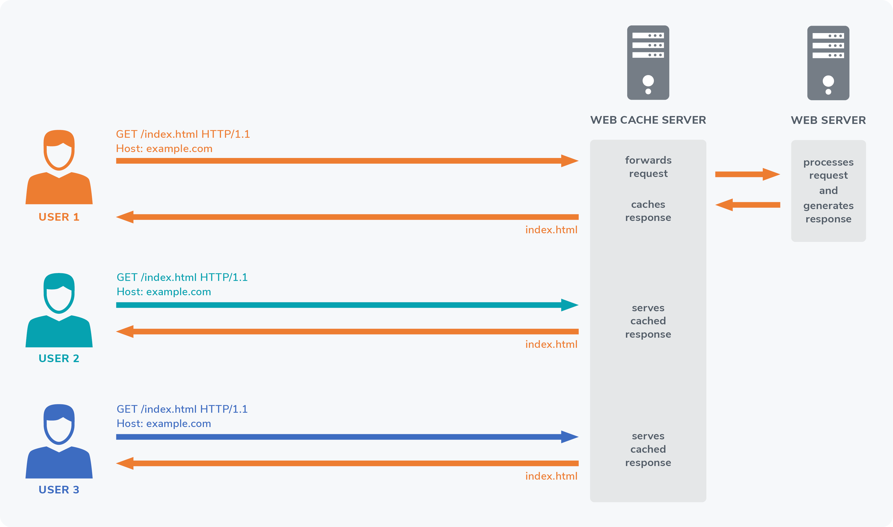

Reportando vulnerabilidades
en proyectos Open Source
Santos Gallegos
-
stsewd@proton.me
@stsewd
$ WHOAMI

Contribuyendo a proyectos open source
- Código
- Documentación
- Traducciones
- Reportando bugs
Contribuyendo a proyectos open source
Reportando
vulnerabilidades
Seguridad en
proyectos
Open source
https://snyk.io/reports/open-source-security/
Seguridad en proyectos Open source

Seguridad en proyectos Open source
Vectores de ataque
-
Acceso no autorizado al repositorio
-
Acceso no autorizado a la cuenta de un maintainer
-
Código malicioso en un pull request
-
Supply chain attacks
Seguridad en proyectos Open source
Vulnerabilidades introducidas de manera no intencionada
Ejemplo 🐞
Vulnerabilidades introducidas de manera no intencionada
import subprocess
def clone(repo, destination):
# Código vulnerable a code injection.
subprocess.run(["git", "clone", repo, destination])
# Esto no funciona
clone("; touch /tmp/pwn;", "...")
# Esto si!
clone("--upload-pack=touch /tmp/pwn", "file:///foo")
Ejemplo 🐞
Vulnerabilidades introducidas de manera no intencionada
import subprocess
def clone(repo, destination):
subprocess.run(["git", "clone", "--", repo, destination])
# Esto no funciona
clone("; touch /tmp/pwn;", "...")
# Esto tampoco!
clone("--upload-pack=touch /tmp/pwn", "file:///foo")
https://github.com/gitpython-developers/GitPython/pull/1518
Reportando
vulnerabilidades
Confidencialidad
Mantener la confidencialidad durante todo el proceso es importante
Confidencialidad
Lo que no debemos hacer
- Contarle a todo el mundo
- Publicarlo en redes sociales como LinkedIn o Twitter
- Crear un issue o PR en el repositorio
Verificación
Asegúrate que la vulnerabilidad sea real
Verificación
- Asegúrate de usar la última version o una versión soportada
-
Lee la documentación del proyecto
-
Reproduce la vulnerabilidad en un entorno aislado
-
Asegúrate que el origen de la vulnerabilidad sea el proyecto que vas a reportar
Ejemplo 🐛
Vulnerabilidades bajo ciertas circunstancias
urlpatterns = [
# Vulnerable a cache poisoning bajo ciertas circunstancias.
re_path(
r"^account/security-log/",
UserSecurityLog.as_view(),
name="user_security_log",
)
]
Ejemplo 🐛
Vulnerabilidades bajo ciertas circunstancias
urlpatterns = [
# Vulnerable a cache poisoning bajo ciertas circunstancias.
re_path(
r"^account/security-log/",
UserSecurityLog.as_view(),
name="user_security_log",
)
]
Ejemplo 🐛
Vulnerabilidades bajo ciertas circunstancias
urlpatterns = [
# Vulnerable a cache poisoning bajo ciertas circunstancias.
re_path(
r"^account/security-log/",
UserSecurityLog.as_view(),
name="user_security_log",
)
]
$ curl -I https://example.com/account/security-log/
HTTP/2 200
cf-cache-status: DYNAMIC
$ curl -I https://example.com/account/security-log/foo/bar/
HTTP/2 200
cf-cache-status: DYNAMIC
$ curl https://example.com/account/security-log/foo/bar.js
HTTP/2 200
cf-cache-status: MISS
$ curl https://example.com/account/security-log/foo/bar.js
HTTP/2 200
cf-cache-status: HIT
Ejemplo 🐛
Cache poisoning

Ejemplo 🐛
Vulnerabilidades bajo ciertas circunstancias
urlpatterns = [
# Vulnerable a cache poisoning bajo ciertas circunstancias.
re_path(
r"^account/security-log/$",
UserSecurityLog.as_view(),
name="user_security_log",
)
]
$ curl -I https://example.com/account/security-log/
HTTP/2 200
cf-cache-status: DYNAMIC
$ curl -I https://example.com/account/security-log/foo/bar/
HTTP/2 404
cf-cache-status: DYNAMIC
$ curl https://example.com/account/security-log/foo/bar.js
HTTP/2 404
cf-cache-status: DYNAMIC
https://github.com/readthedocs/readthedocs.org/security/advisories/GHSA-7fcx-wwr3-99jv
Política de seguridad
Contacto
Busca la política de seguridad, contacto, o medio adecuado para reportar la vulnerabilidad
Política / Contacto
Repositorio del proyecto
SECURITY.mdSECURITY.txtREADME.md
Política / Contacto
Documentación o web principal
- Realiza una búsqueda: security
-
https://github.com/.well-known/security.txt
Política de seguridad
¡Léela!
Pregunta por el contacto en el repositorio
-
Issue tracker
-
Lista de correos
¡Recuerda no incluir detalles de la vulnerabilidad!
Busca un email de algún maintainer
-
Documentación
-
Historial de commits
Asegúrate de que es la persona correcta
antes de incluir detalles de la vulnerabilidad.
Reporte
Al final de la búsqueda, deberíamos tener un email o plataforma donde reportar la vulnerabilidad
de manera confidencial.
Reporte
Incluye la mayor cantidad de información posible
-
Líneas de código afectadas o vulnerables
-
Proof of Concept (PoC)
-
Impacto
-
Sugerencias de como arreglar el bug
Reporte
Recuerda...
-
Confidencialidad
-
Sé paciente y amable, los maintainers son voluntarios
-
Como todo tipo de contribución,
reportar una vulnerabilidad es una contribución voluntaria*
Confirmación y
Mitigación
Una vez que la vulnerabilidad haya sido confirmada, el siguiente paso es arreglarla.
404
Confirmación Not Found
Puedes hacer tu reporte público luego de 90 días,
es el estándar de la industria.
Los maintainers tienen la opción de reservar un CVE para la vulnerabilidad si lo consideran necesario.
Está bien pedir o recordar a los maintainers que te acrediten por reportar la vulnerabilidad.
Verificación
re-verificación
Asegúrate que la vulnerabilidad haya sido arreglada
Plataformas
Existen varias plataformas que son muy útiles parar las personas que reportan vulnerabilidades,
y para los maintainers.
Plataformas
GitHub Advisories
- Reportes, clasificación
- Discusiones privadas
- Versiones afectadas
- CWE, CVSS, CVE
- PRs privadas
- Crédito a todos los involucrados

Encontrando
Vulnerabilidades
Encontrando vulnerabilidades
EXPLORA Y LEE
CÓDIGO
Encontrando vulnerabilidades
- Empieza por proyectos que uses o te interesen
- Familiarízate con el código del proyecto
- Lee las vulnerabilidades reportadas anteriormente
- Chequea vulnerabilidades similares en/de otros proyectos
- Lee sobre las vulnerabilidades más comunes en el lenguaje o tecnologías usadas en el proyecto
Encontrando vulnerabilidades
Encontrando vulnerabilidades
- Revisa todos los entry points que reciban input de usuarios
-
Busca llamadas a funciones peligrosas
-
exec, eval, system, shell_exec, etc
-
regex, format
-
open, read, write, etc
-
mark_safe, format_html, etc
-
grep es tu mejor amigo
Ejemplo 🐜
Llamada a función peligrosa
import re
def contains(word, text):
return bool(re.search(word, text, re.IGNORECASE))
# Retorna True
contains("hola", "Hola mundo")
contains("HolA", "Hola mundo")
# La función tarda mucho tiempo en ejecutarse.
contains("(a|a)*b", "Holaaaaaaaaaaaaaaaaaaaaaaaaa mundo")
Ejemplo 🐜
Llamada a función peligrosa
def contains(word, text):
return word.lower() in text.lower()
# Retorna True
contains("hola", "Hola mundo")
contains("HolA", "Hola mundo")
# Retorna False
contains("(a|a)*b", "Holaaaaaaaaaaaaaaaaaaaaaaaaa mundo")
https://github.com/advisories/GHSA-wj85-w4f4-xh8h
¡Tú también puedes hacerlo!
Hagamos los proyectos open source más seguros juntos
Referencias y recursos adicionales